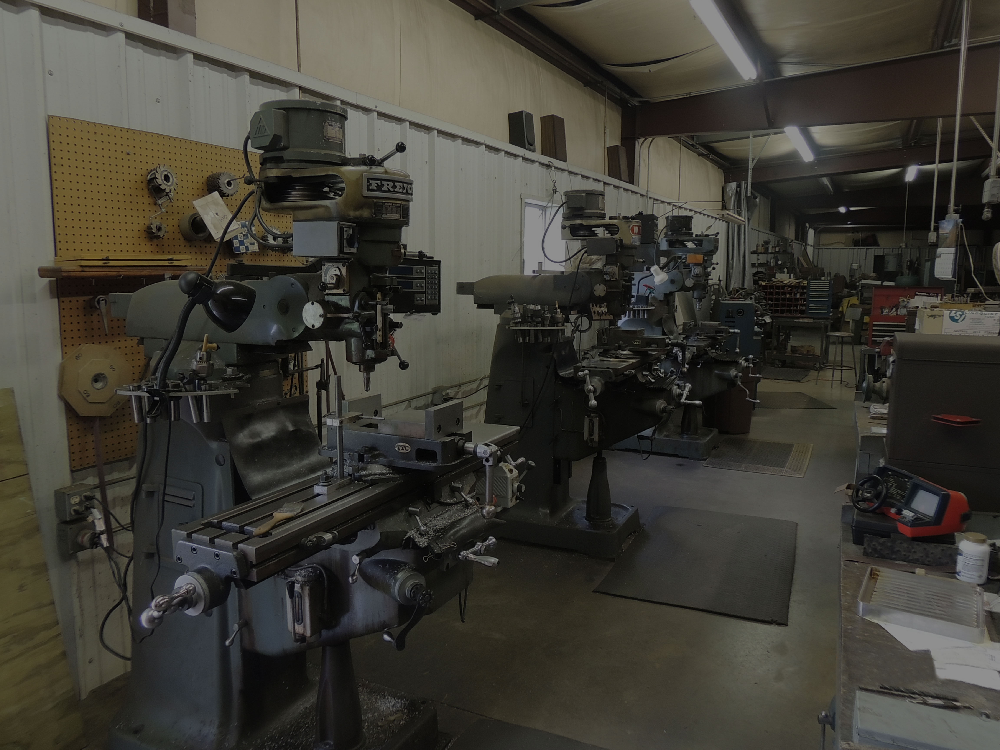
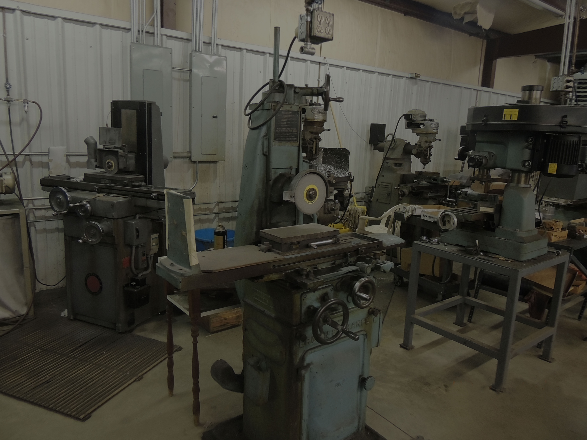

The Shop

We started manufacturing archery release aids in 1990 and the double caliper release aid was patented in 1992. We strive to make quality products and are always trying new things. All employees have advanced education in machining. We have numerous machines for all machining purposes: milling machines, lathes, grinders, and heat treatment.
Products

We offer three styles of release aids. Made of quality aluminum and steel components and anodized, these release aids are a long lasting product. The single and double caliper release each have an adjustable trigger. Each release aid can be purchased in black, gray or hunter green. They come with a wrist strap or concho grip.
Contact
4016 HWY 194 N,
Boone, NC
(828) 262-0116
Or Drop Us a Line